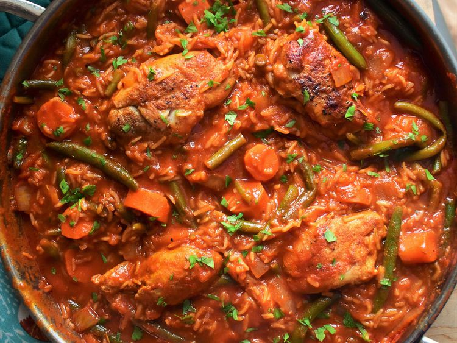

To begin, heat oil in a large saucepan and cook the onions over medium-low heat until translucent.
in the stewed tomatoes and tomato paste, seasoning the mixture with salt, black pepper, cayenne pepper, red pepper flakes, Worcestershire sauce, and rosemary.
Bring the seasoned base to a boil, then lower the heat, stir in the water, add the chicken pieces, and let everything simmer covered for 30 minutes.
Next, add the rice, carrots, and green beans into the pot and season the mixture with nutmeg.
Bring the entire pot to a boil once more, then immediately reduce the heat to low.
Cover the saucepan tightly and let it simmer for 25 to 30 minutes until the rice is fully cooked and the chicken becomes fork-tender.